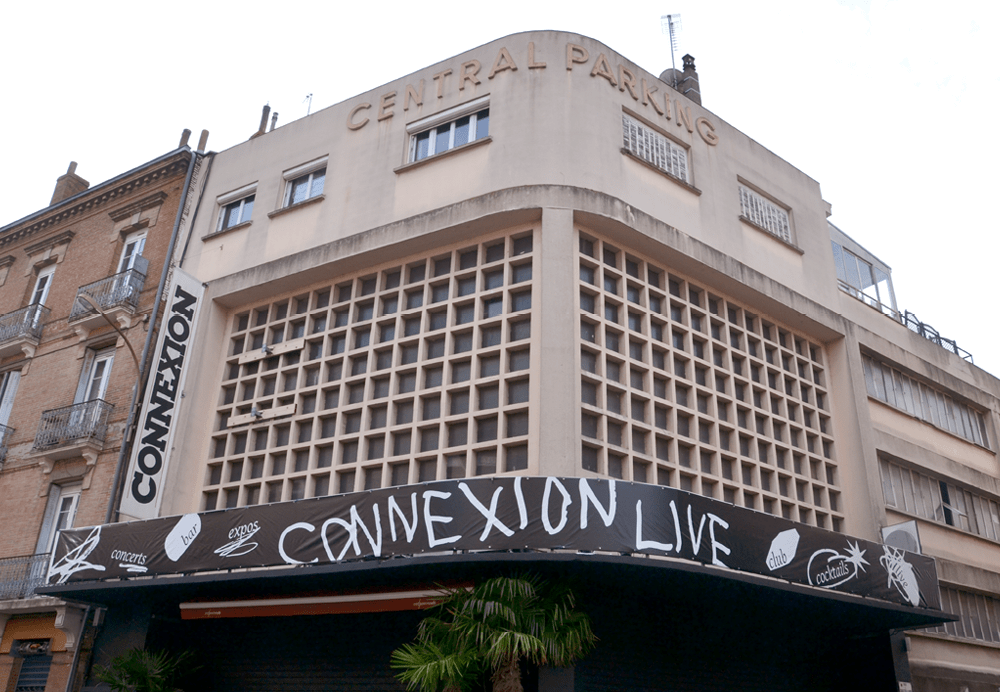
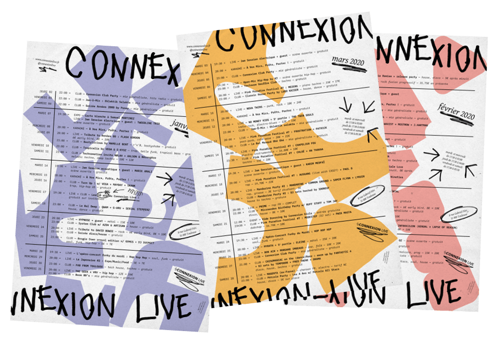
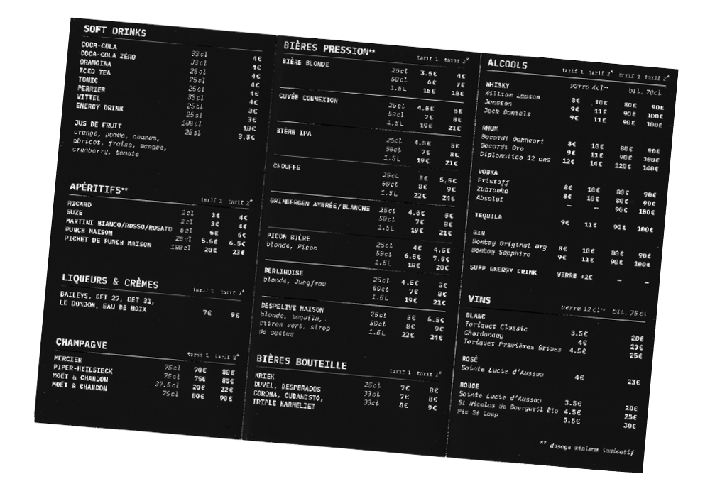
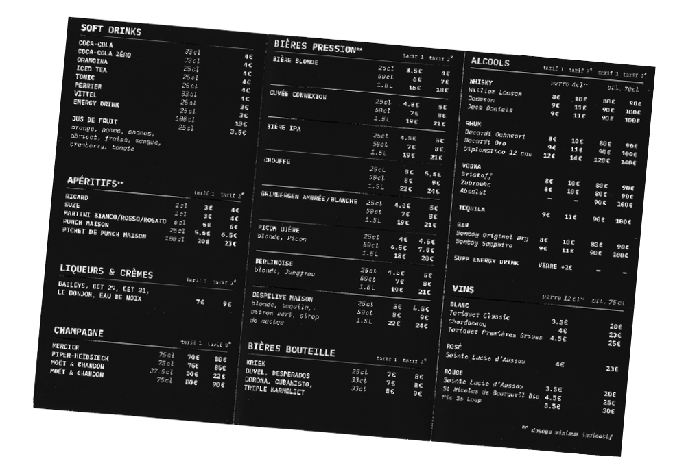
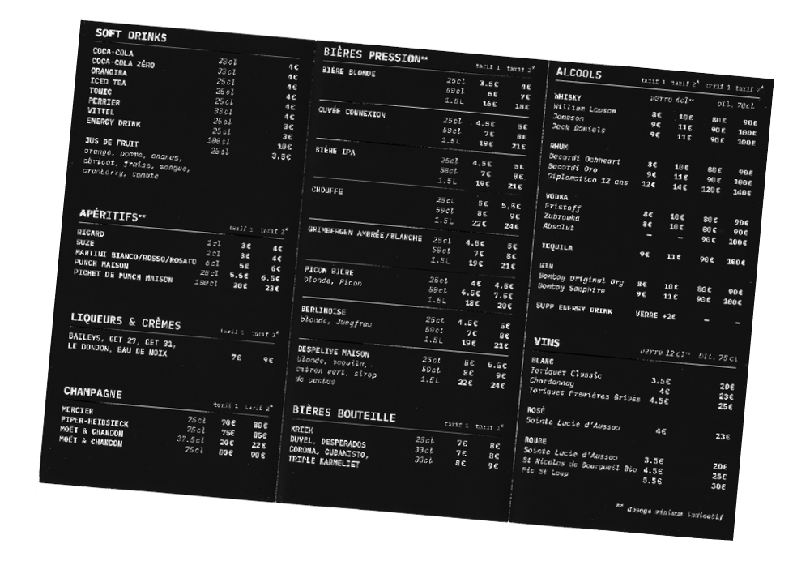

Connexion Live
Identité graphique de la programmation du Connexion Live, pour son anniversaire : « 10 ans de Connexion Live, toujours pas sage ! » Identité déployée en affiches, programmes mensuels, supports de communication numérique et bâches extérieures.
Identité graphique réalisée avec Léa Sefsaf, designer graphique, en septembre 2019.




 

